Workspace Environment Management (WEM) 2411
Change Log
- 2024 Dec 4 - Group Policy Migration Tool
- 2024 Dec 4 - Updated Install sections for version 2411
- 2023 Sept 16 - updated entire article for WEM Web Console
- 2308 Transformer can detect Workspace app
- 2023 June 2 - Group Managed Service Account at Citrix Docs
- 2023 May 30 - added link to CTP James Kindon WEM Advanced Guidance – 2023 at CUGC
Overview
Workspace Environment Management (WEM) is Citrix's Performance Management and UEM (User Environment Management) tool for all XenApp/XenDesktop Enterprise or Platinum Customers with active Software Maintenance (Subscription Advantage is not sufficient). The WEM Agent is supported on XenApp 6.5, and XenApp/XenDesktop 7.x. Videos:
- Hal Lange demonstrates Citrix WEM Performance Optimizations in a YouTube video
- YouTube video XenTegra Citrix Workspace Environment Management (WEM) Webinar
- CUGC Welcome to Citrix Workspace Environment Management (WEM) - Hal Lange, CTP Steve Greenberg, CTP Carl Webster
Note: WEM does not replace Citrix Profile Management. You usually implement both.
Citrix Blog Post User Experience on Steroids: Citrix Workspace Environment Management has a list of Frequently Asked Questions about WEM, including a drawing of the architecture.
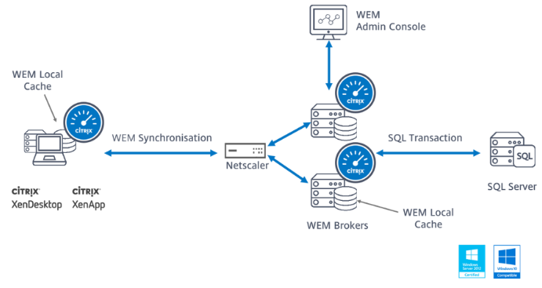
From Hal Lange at Database sizing at Citrix Discussions: SQL Always On is fully supported. In WEM 1909 and older, the ONE caveat is to remove from the Always On Availability Group before upgrading.
Here are the official calculations from the Norskale days on space needed on the SQL Server:
- Reserve 1GB of RAM per 1,000 users deployed
- RAM=1.5GB system + (1.5GB SQL + 1 GB per 1,000 users) for that SQL instance
- Disk = 1GB per 10,000 users per year + 10 MB per WEM site configured
Upgrade WEM
There is no LTSR version of Citrix Workspace Environment Management (WEM), so you should always upgrade to the latest version of WEM.
From Upgrade a deployment at Citrix Docs: In-place upgrades from versions earlier than Workspace Environment Management 4.7 to version 1808 or later are not supported. To upgrade from any of those earlier versions, you need to upgrade to version 4.7 first and then upgrade to the target version.
If you want to upgrade a WEM deployment earlier than 2006 to 2209 or later: To avoid database upgrade failures, upgrade to 2103 first and then to 2209 or later.
CTA Marco Hofmann at CUGC: How-To: Update Citrix Workspace Environment Management (WEM) from 4.x to 4.7 (v4.07.00.00)
To upgrade Citrix WEM:
-
In-place upgrade the Citrix Licensing Server. No special instructions.
- Ensure the installed licenses a non-expired Subscription Advantage date.
- Before you upgrade, run WEM Infrastructure Service Configuration Utility and record all settings.
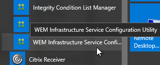
- In-place upgrade the WEM Server. No special instructions.
-
Use the Database Maintenance tool to upgrade the WEM database.
-
In WEM 1909 and older, before upgrading the database that's in a SQL Server Always On availability group, you must remove it from the availability group. This is no longer required in WEM 1912 and newer.
- You might have to run the WEM Infrastructure Service Configuration Utility on each WEM Server to point to the upgraded database. If the settings are still there, then just click Save Configuration.
- In-place upgrade the WEM Console. No special instructions.
-
In-place upgrade the WEM Agents.
-
Srinivasan Shanmugam at WEM Agent v4.5 Upgrade Issues at CUGC mentioned that you might have to delete Agent's local database.
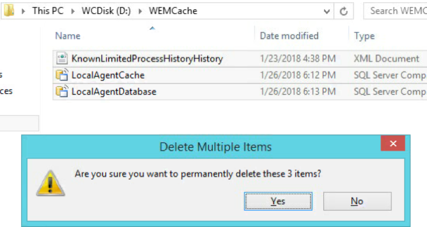
Install/Upgrade WEM Server (Infrastructure Service)
There is no LTSR version of Citrix Workspace Environment Management (WEM), so you should always upgrade to the latest version of WEM.
The WEM Infrastructure Service can be installed on one or more servers, but Citrix says don't install it on Delivery Controllers. The WEM Agent cannot be installed on the Infrastructure Service server.
- Another option: CTP James Kindon explains how to install WEM Server on Windows Server Core
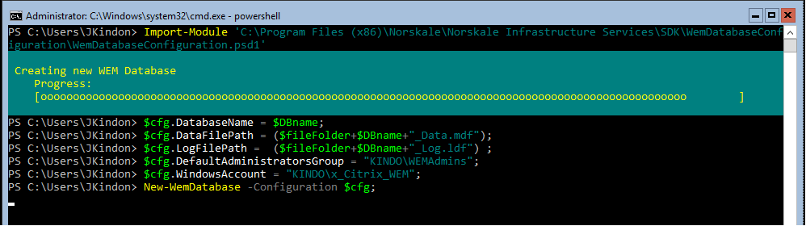
A WEM Server with 4 vCPU and 8 GB RAM can support up to 3,000 users.
-
Port 8288 - WEM 1912 and newer have a new port 8288 for WEM Agent Cache Synchronization. You'll need to add this port to your load balancer and open it in your firewall.
- Port 8285 is still available for WEM Agents 2012 and older connecting to newer WEM Servers.
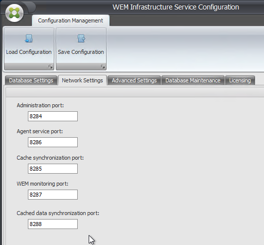
- Old port removed - The Cache synchronization port (8285) was removed from WEM Server 2103 and newer, so make sure your existing agents are a version that supports the newer Cached data synchronization port. WEM Agent 1912 and newer should be sufficient.
- If your existing WEM Agents don't support the new port number, then upgrade your WEM Server to version 2012 (or version 1912), upgrade your WEM Agents to the corresponding version, and then upgrade the WEM Server to a newer version.
- Download Workspace Environment Management 2411 and extract it.

- If you are upgrading, run WEM Infrastructure Service Configuration Utility and record all settings. These settings might be wiped out during the upgrade.
- Licenses - make sure your installed CVAD licenses have a CSS date that is later than the date required by your WEM version. The required CSS date is shown at the top of the WEM download page.

- Run the downloaded Citrix Workspace Environment Management Infrastructure Services Setup.exe from the 2411-01-100-01 folder.

- Check the box next to I agree to the license terms and click Install.

- In the Welcome to the Citrix Workspace Environment Management Infrastructure Services Setup Wizard page, click Next.

- In the Destination Folder page, click Next.

- In the Ready to install Citrix Workspace Environment Management Infrastructure Services page, click Install.

- In the Completed the Citrix Workspace Environment Management Infrastructure Services Setup Wizard page, click Finish.
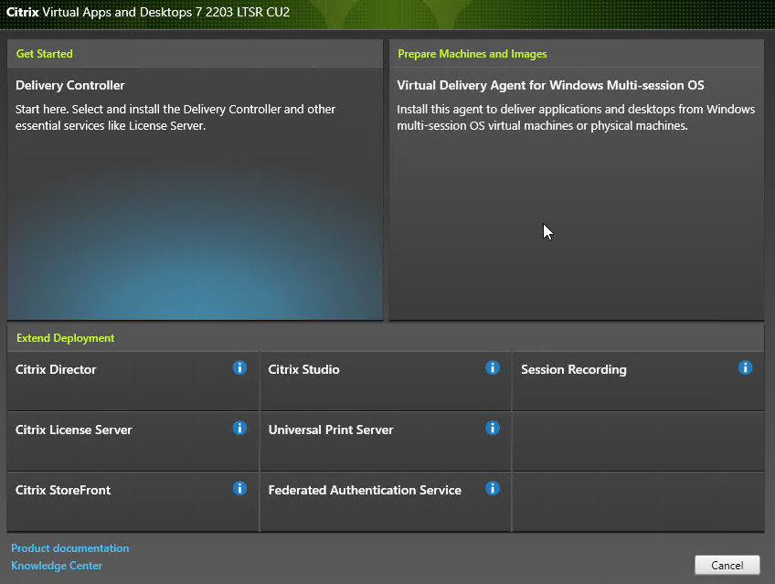
- Click Launch Database Management Utility.
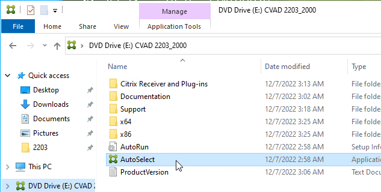
- Antivirus - C:\Program Files (x86)\Citrix\Workspace Environment Management Infrastructure Services and C:\Program Files (x86)\Norskale\Norskale Infrastructure Services must be excluded from Antivirus scanning. Or exclude: Norskale Broker Service.exe; Norskale Broker Service Configuration Utility.exe; Norskale Database Management Utility.exe.
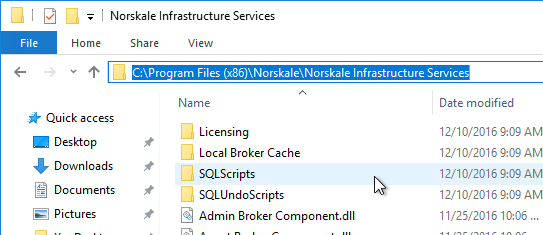
- If you are upgrading, then make sure your WEM Service Account has Full control permissions on the DBSync folder at C:\Program Files (x86)\Norskale\Norskale Infrastructure Services\DBSync. For new installs, WEM should set this permission correctly once the Infrastructure Services are configured. Note: this folder seems to be missing in newer versions of WEM.
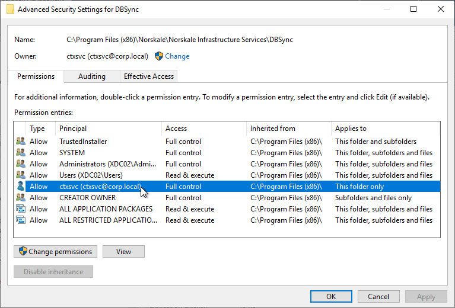
-
Firewall - Ensure firewall allows the following ports to/from the WEM Infrastructure Service servers. See Citrix Tech Zone Communication Ports Used by Citrix Technologies.
-
Agent Port - defaults to TCP 8286 - from WEM Agent to WEM Infrastructure Service
- AgentSyncPort - defaults to TCP 8285 - from WEM Agent to WEM Infrastructure Service
- Cached data synchronization port - defaults to TCP 8288 - from WEM Agent 1912 and newer to WEM Infrastructure Service
- AdminPort - defaults to TCP 8284 - from WEM Admin Console to WEM Infrastructure Service
- Monitoring Port - defaults to TCP 8287 - from Director to WEM Infrastructure Service
- AgentPort - defaults to TCP 49752 - from WEM Infrastructure Service to WEM Agent
- Port 8285 is still available for WEM Agents 2012 and older connecting to newer WEM Servers.
Upgrade WEM Database
Workspace Environment Management has PowerShell commands. For details, see Citrix Workspace Environment Management SDK at Citrix Developer docs.
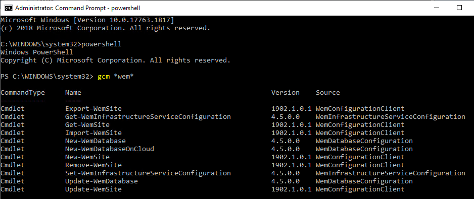
To upgrade the Workspace Environment Management database using the GUI tool:
- If this is a new install, skip to Create WEM Database.
- The person running Database Management must be a sysadmin on the SQL Server. Or you can enter a SQL login.
- On the WEM server, run Database Management from the Start Menu.
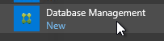
- If upgrading, in the ribbon, click Upgrade Database.
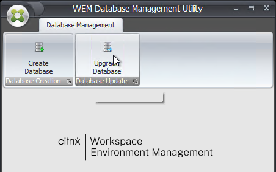
-
In WEM 1906 and newer, the fields might already be filled in. Otherwise:
- Enter the SQL Server Name.
- Enter the existing WEM Database Name.
- Configure the credentials for the WEM service account.
- If your account is not a sysadmin on SQL, then enter a SQL account in the Database Credentials fields.
- Click Upgrade.
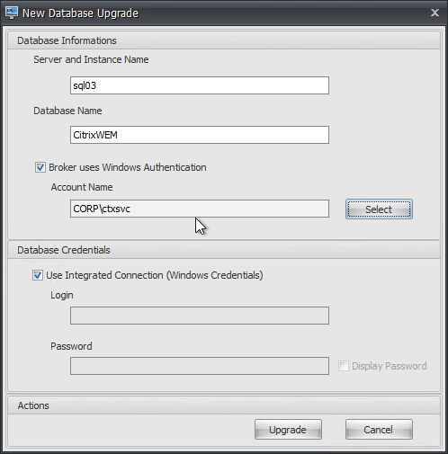
- Click Yes when asked to proceed.
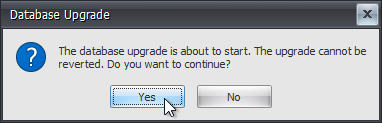
- Click OK when prompted that database upgraded successfully.
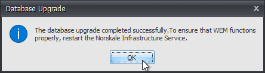
- Click Finish to close the Database Upgrade Wizard.
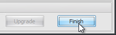
- Close the WEM Database Management Utility.
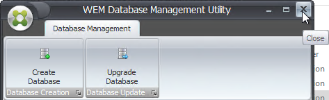
- Open services.msc and restart the Citrix WEM Infrastructure Service or restart Norskale Infrastructure Service.

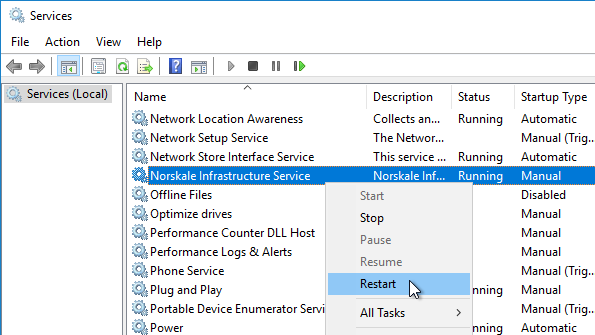
After the database is upgraded, run the WEM Infrastructure Service Configuration Utility.
- If the upgrade preserved the settings, then simply click Save Configuration. The service won't start unless you do this.
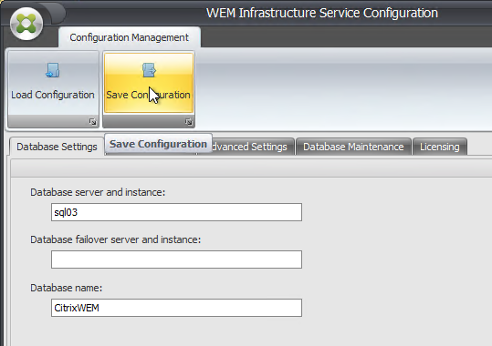
-
In WEM older than version 1906, you might have to re-configure the settings.
- On the Licensing tab, configure the licensing server.
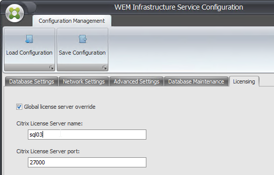
- On the Database Maintenance tab, consider checking Enable Scheduled Database Maintenance.
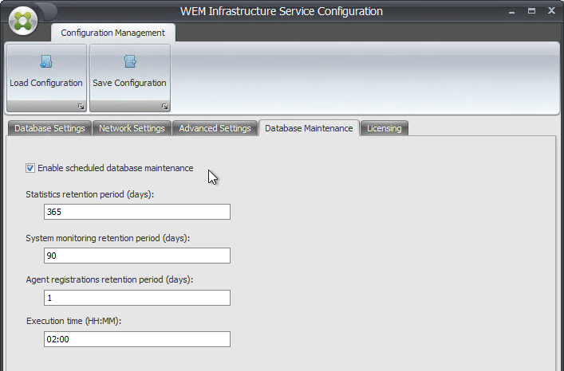
-
On the Advanced Settings tab:
- Enter the Infrastructure service account credentials.
- Enter the vuemUser SQL user account password.
- In WEM 1909 and newer, check the box next to Enable performance tuning and set both of the Minimum threads boxes to the number of concurrent WEM Agents that will be connected to this one WEM server. Maximum value is 3000.
- Make a choice regarding Google Analytics.
- The Advanced Settings tab will look something like this.
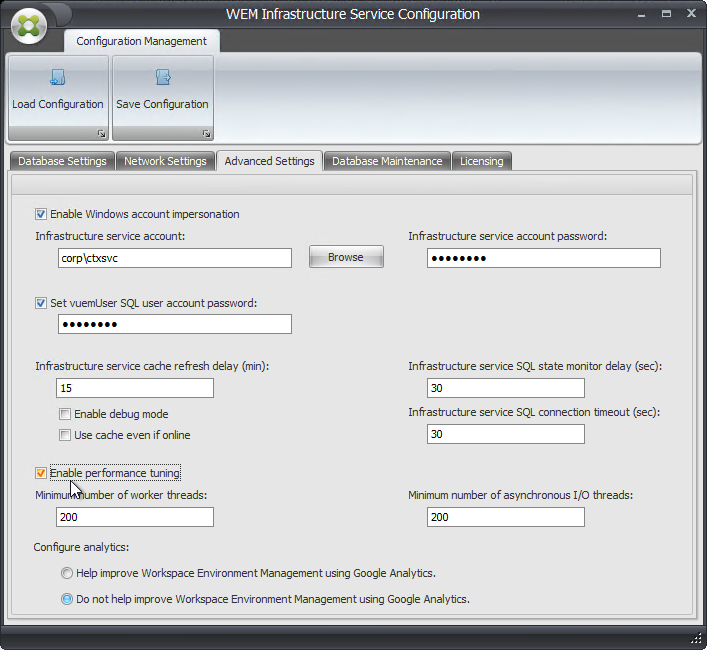
- On the Database Settings tab, enter the database server name and database name.
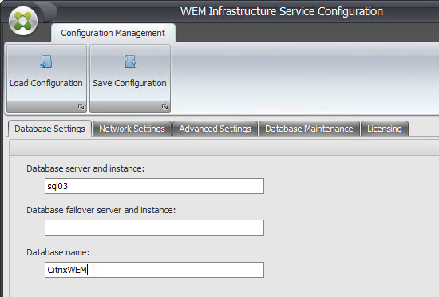
- In the ribbon, click Save Configuration.
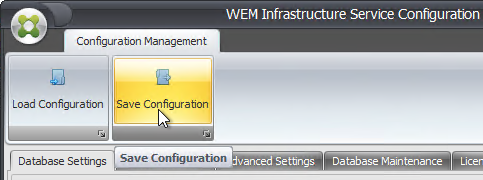
- The Advanced Settings tab will look something like this.
- Click Yes to restart the Broker Service.
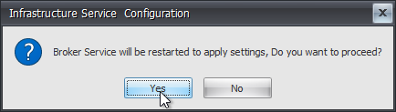
- Skip ahead to upgrade the WEM Administration Console.
- On the Licensing tab, configure the licensing server.
Create WEM Database
Workspace Environment Management has PowerShell commands. For details, see Citrix Workspace Environment Management SDK at Citrix Developer docs.
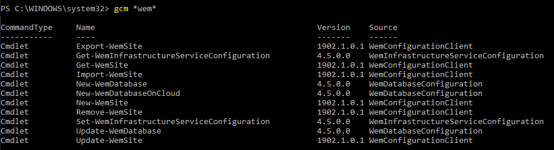
To create the database using the GUI tool:
- The person running Database Management must be a sysadmin on the SQL Server. Or you can enter a SQL login.
- Make sure SQL Server authentication (mixed mode) is enabled on the SQL server > Properties > Security. Even though the WEM Infrastructure Service server runs as an AD account that is used login to SQL, WEM Infrastructure Service also uses a SQL account named vuemUser, which means mixed mode must be enabled. Source = John Long at WEM new install, cannot connect to infrastructure server at Citrix Discussions.
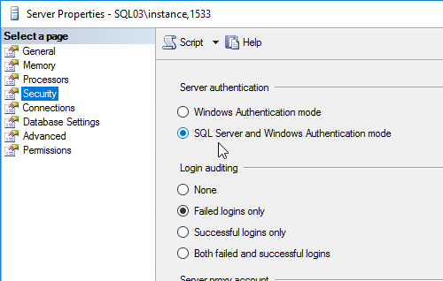
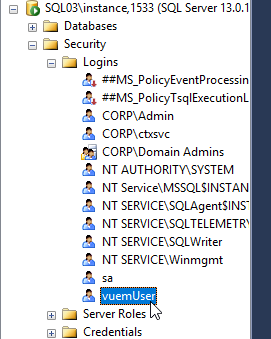
- On the WEM server, run WEM Database Management Utility from the Start Menu.
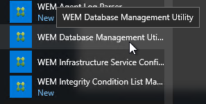
- If a new install, in the ribbon, click Create Database.
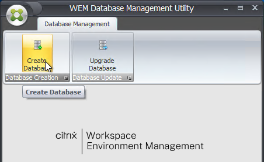
- In the Create database Wizard page, click Next.
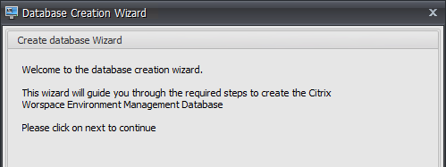
-
In the Database Information page, enter the SQL server name, and enter a new Database Name.
- Only enter an instance name if you have a named SQL instance.
- Only enter a port number if your SQL instance is listening on a static port number other than 1433.
- From Måns Hurtigh at Problem creating WEM 4.3 Database on SQL Server 2012 at Citrix Discussions: The database name cannot contain a dash.
- The paths might not be correct so double check them. Then click Next.
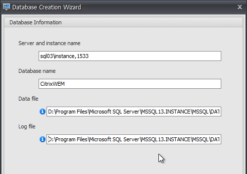
- In the Database Server Credentials page, if your account has sysadmin permissions, then leave the box checked. Otherwise, uncheck the box, and enter a SQL login that has sysadmin permissions. Click Next.
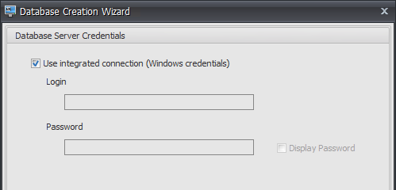
- In the VUEM Administrators section, click Browse, and select your Citrix Admins group.
-
In the Database Security page, if you intend to load balance multiple WEM servers, then specify a Windows service account for database access. The WEM Infrastructure Service will run as this account. See the load balancing topic at Install the Citrix Workspace Environment Management Infrastructure Services at Citrix Docs.
-
WEM 2305 and newer support group Managed Service Account (gMSA). See Group Managed Service Account at Citrix Docs.
-
The Database Creation Wizard also creates a SQL account called vuemUser with an 8 character alphanumeric password. If you want it more complex, check the box and specify the password.
-
Note: if you intend to implement AlwaysOn Availability Group, then you must specify this password, since you'll be asked for it again when adding the database to the Availability Group. Also see SQL Server Always On at Citrix Docs.
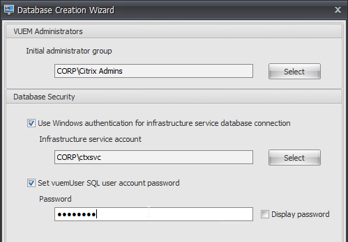
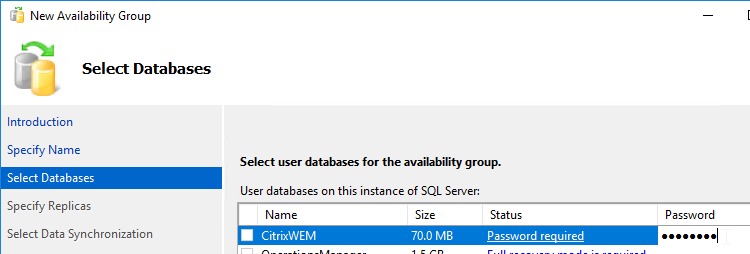
- Click Next.
- In the Database Information Summary page, click Create Database.
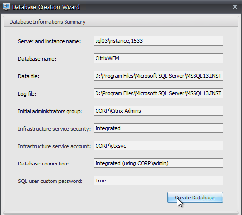
- Click OK when prompted that the database was created successfully.
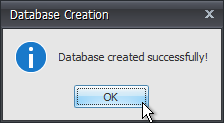
- Click Finish to close the Database Creation Wizard.
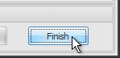
- Close the WEM Database Management Utility.
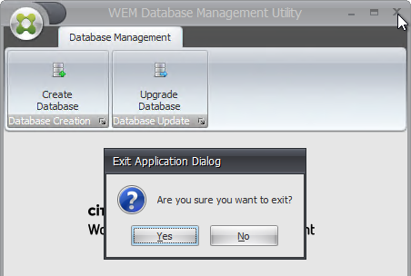
- There is a log file at "C:\Program Files (x86)\Citrix\Workspace Environment Management Infrastructure Services\Citrix WEM Database Management Utility Debug Log.log" or at "C:\Program Files (x86)\Norskale\Norskale Infrastructure Services\Citrix WEM Database Management Utility Debug Log.log"

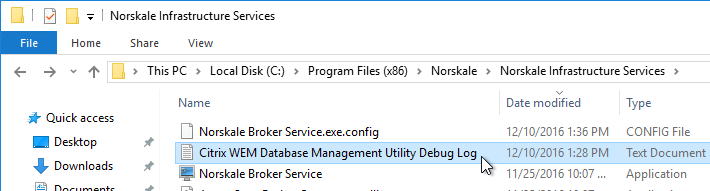
WEM Infrastructure Services Configuration
- On the WEM Server, run WEM Infrastructure Service Configuration Utility from the Start Menu.
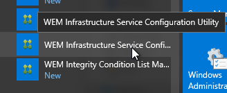
- On the Database Settings tab, enter the SQL Server name and database name.
- Switch to the Advanced Settings tab.
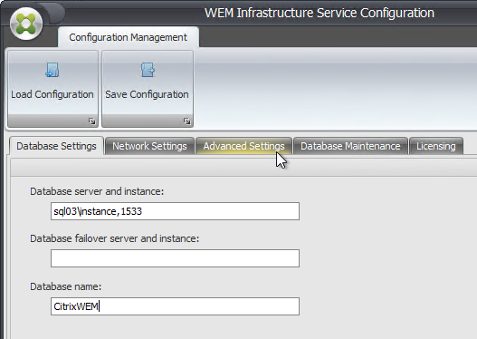
- If you intend to load balance WEM Servers, then Browse to a service account. This service account must have access to the database.
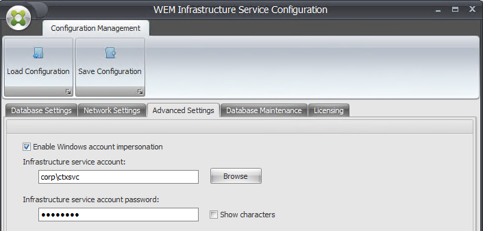
- The service account must be in the local Administrators group on the WEM servers.
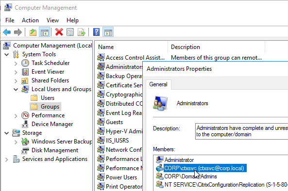
- The service account must be in the local Administrators group on the WEM servers.
- Enter the vuemUser SQL user account password.
- In WEM 1909 and newer, check the box next to Enable performance tuning and set both of the Minimum threads boxes to the number of concurrent WEM Agents that will be connected to this one WEM server. Maximum value is 3000.
- Make a choice regarding Google Analytics.
- The Advanced Settings tab will look something like this.
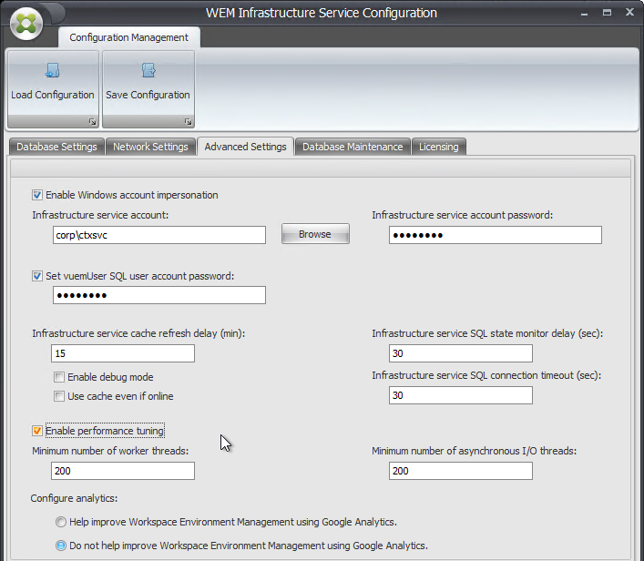
- On the Database Maintenance tab, consider checking Enable Scheduled Database Maintenance.
- On the Licensing tab, you can enter a Citrix License Server 11.14.0.1 or newer that has valid licenses. Or you can enter the license server later in the admin console.
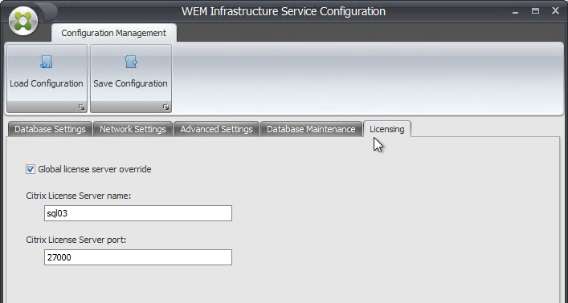
- Click Save Configuration in the ribbon.
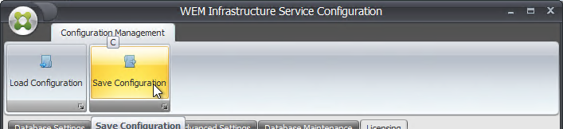
- Click Yes when asked to restart the Broker Service.
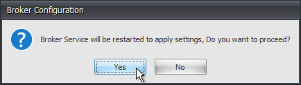
- Close the WEM Infrastructure Service Configuration utility.
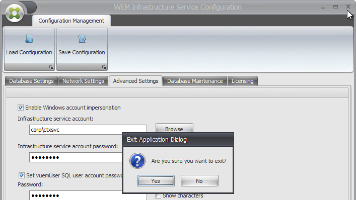
- If you are load balancing WEM servers, then you must also create a Kerberos SPN, where
[accountname]is the service account you are using for the Norskale service. If you have multiple WEM deployments in a single forest, then WEM 2411 and newer let you specify an alternative SPN as detailed at Citrix Docs.
setspn -U -S Norskale/BrokerService [accountname]
Install/Upgrade WEM Console
- Run Citrix Workspace Environment Management Console Setup.exe from the downloaded WEM 2411 (aka 2411-01-100-01) installation files.

- Check the box next to I agree to the license terms and click Install.

- In the Welcome to the Citrix Workspace Environment Management Console Setup Wizard page, click Next.

- In the Destination Folder page, click Next.
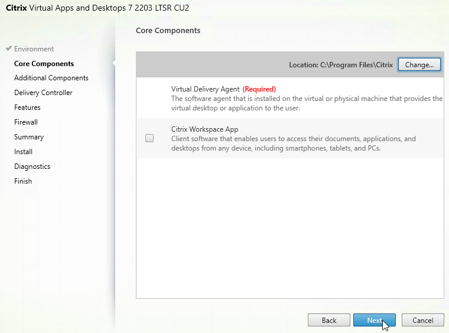
- In the Ready to install Citrix Workspace Environment Management Console page, click Install.

- In the Completed the Citrix Workspace Environment Management Console Setup Wizard page, click Finish.

- Click Close.
Install/Upgrade WEM Web Console
Install or upgrade the WEM Web Console on the WEM Server. The WEM Web Console can use port 443 if nothing else is using that port.
- In the extracted WEM 2411 folder, right-click Citrix Workspace Environment Management Web Console.exe and click Run as administrator.

- Check the box next to I agree to the license terms and click Install.

- In the Welcome to the Citrix Workspace Environment Management Web Console Setup Wizard page, click Next.
- In the Destination Folder page, click Next.
- In the Ready to install the Citrix Workspace Environment Management Web Console Setup Wizard page, click Install.
- In the Completed the Citrix Workspace Environment Management Web Console Setup Wizard page, click Finish.
- Click Launch Web Console Configuration. This might not work if you didn't run the installer elevated.
Web Console Configuration
- Create a file share for WEM and grant Modify permission to a service account.
- Create a service account and add it to WEM Console > Administration > Administrators as Global Admin with Full Access and not Disabled.
- Install a certificate in the Local Computer store (certlm.msc).
- From the Start Menu, right-click WEM Web Console Configuration, expand More, and click Run as administrator.
- Click Next.
- The Port number cannot conflict with other services already using the port, including IIS.
- The Infrastructure server name can be localhost if you installed the Web Console on the WEM Infrastructure Server.
- User name must be Global Admin inside WEM.
- Click Start service.
- Click Configure certificate.


- Browse to the local cert and then click Set up certificate.
- Click Finish.
- Launch the Web Console and login.
- Click your name on the top-right and click Storage folder.
- Enter the UNC path to the file share for WEM.
- Check the box next to Require credentials and enter the service account. Click Done.
WEM Configuration Sets
Each WEM Agent belongs to one Configuration Set. Most actions in a Configuration Set can be filtered, but some settings are global to the Set. To handle global settings, you can create multiple Configuration Sets that apply to different WEM Agents.
In WEM Web Console (2308 and newer):
- On the left, click Configuration Sets.
- On the right, click Add configuration set.
- Give the set a name and click Save.
- Click a Configuration Set to create Actions and configure other settings.
- Use the drop-down menu on the top-left to switch to a different Configuration Set.
- Directory Objects lets you add individual computers or computer Organizational Units (OUs) and assign them to Configuration Sets.
- Back in the list of Configuration Sets, on the right, you can click Backup and Restore.

- Click Backup to perform a manual backup. Or click Manage automatic backup. The backups are stored in the SMB file share. In WEM 2407 and newer, automatic backups can keep up to 25 backups.

- Notice the Directory objects are not included in the backups.
- After you have a backup, you can Restore it to any Configuration Set. This is an easy way of copying one Set to another.

In WEM Classic Console:
- From the Start Menu, run WEM Administration Console.
- In the ribbon, click Connect.
- In the Infrastructure Server Connection window, enter the WEM Server name, and click Connect.
- Some WEM Console settings are global (every agent gets the same setting). So if you want different global settings for different agents, then you create multiple WEM Configuration sets. At the top of the window, in the ribbon, you can create a new WEM Configuration set.
- WEM 1912 and newer can Backup and Restore entire Configuration Sets, which makes it easy to duplicate a Configuration Set.
- When Restoring a Configuration Set, there's no need to create a new empty Set. Just run the Restore wizard and WEM will try to use the original Configuration Set name. If the original Configuration Set already exists, then WEM will append _1 to the name, which you can then rename.
- When Restoring a Configuration Set, there's no need to create a new empty Set. Just run the Restore wizard and WEM will try to use the original Configuration Set name. If the original Configuration Set already exists, then WEM will append _1 to the name, which you can then rename.
- Once you have multiple Configuration sets, you can use the drop-down to switch between them.
- A WEM Agent can only belong to one WEM Configuration set. Different Agents can belong to different WEM Configuration sets.
- In WEM 4.3 and newer, you add agents to the Configuration set at Active Directory Objects (workspace on bottom left) > Machines (node on top left). You can add OUs or individual objects (computers or computer groups).
Import Recommended Settings
If you have multiple WEM configuration sets, this process should be repeated for each new, empty WEM configuration set. This process is only available in the classic WEM Console.
- On the right side of the ribbon, click Restore.
- Select Settings and click Next.
- In the Settings Restore wizard, click Next.
- In the Restore from folder section, click Browse, and browse to the \Workspace-Environment-Management-v-2411-01-100-01\Configuration Templates\Default Recommended Settings folder that was included in the WEM download.
- In the Settings Type Selection section, check all available boxes, and click Next.
- In the Restore settings processing window, click Restore Settings.
- Click Yes when prompted to replace.
- Click Finish.
CTP James Kindon at WEM Hydration Kit has a collection of Applications, File System and Registry Actions that can be imported to WEM. CTP James Kindon recently added Environmental Settings to the Hydration Kit.
WEM 1909 and newer can Migrate your Group Policies to WEM. CTP James Kindon at Migrating GPO settings to WEM explains this feature in detail.
WEM Administrators
This is only configurable in the Classic WEM Console.
- In the Administration Console, go to Administration (workspace on bottom left) > Administrators (node on top left).
- In the right pane, click Add, and specify an Active Directory group that can administer WEM.
- After adding a group or user, right-click the new administrator, and click Edit.
- Use the Permissions drop-down to select a role. The roles are detailed at Administrators at Citrix Docs.
- Then use the State drop-down to select Enabled. New administrators are initially disabled. Click OK to close the window.
WEM Agent Configuration
For configuration guidance, see CTP James Kindon WEM Advanced Guidance – 2023 at CUGC.
Most of these settings are available in the WEM Web Console.
- In the WEM Web Console, click a Configuration Set, expand Advanced Settings and click Agent Settings.
- Click Agent options.
- When making changes, make sure you click Apply changes periodically.
- When making changes, make sure you click Apply changes periodically.
- Setting on these tabs are mostly self-explanatory. Feel free to change any as desired. If you imported a default configuration, then many of these might already be enabled. If not, then configure them manually.
- Check the Launch agent options. and Enable desktop compatibility mode. Web Console lets you configure launch exclusions.
- Enable automatic refresh.
- Enable Offline Mode and Use cache to accelerate actions processing. More info at Citrix Blog Post Workspace Environment Management agent caching explained.
- The Action processing section lets you select which modules should be refreshed on reconnect.
- Scroll down and there are options to process printers and drives asynchronously.
- Agent service options section has a setting for Bypass ie4uinit Check. Enabling this might eliminate a 2-minute delay before WEM Agent starts.
- On the left is UI Agent Personalization. On the right is Appearance and interaction. You can change the UI agent theme. Other settings on this page let you hide the splash screen.
- The Helpdesk Options section lets you enable Screen Capture from the WEM Agent.
- At Advanced Settings > Monitoring Preferences, in WEM 2407 and newer, expand Profile container insights and you can Enable large file scanning.

- Then you can run the report at Monitoring > Profile Container Insights.

- Then you can run the report at Monitoring > Profile Container Insights.
System Optimization
- The System Optimization node lets you configure the various optimizations.
- WEM Classic Console has a System Optimization workspace (bottom left).
- WEM Classic Console has a System Optimization workspace (bottom left).
- On the top left, click the CPU Management node/section.
-
CPU Spikes Protection gives processes equal access to the CPU.
- There's an option for Auto Prevent CPU Spikes.
- From Hal Lange: "CPU Usage Limit should never be set to higher a percentage than one CPU. This will keep a single threaded application from thrashing a CPU. Example: if 2 CPU's are available, the CPU setting should not be set above 49%, if 4 CPU's are available, the CPU setting should not be set above 24%"
- Hal Lange demonstrates Citrix WEM Performance Optimizations in a YouTube video.
- Other tabs/sections let you manually specify CPU priority and/or clamping.
- CTX230843 WEM protection and Skype for Business + Real Time Optimization Pack has a list of processes that should be excluded from WEM CPU Spikes protection.
- Web Console > Monitoring > Insights > Optimization Insights has a report showing CPU optimization.
- From CTA Chris Schrameyer WEM – CPU LOGGING: WEM does not provide any built-in logs to determine when a CPU Spikes Protection action is taken. It would be nice to know what processes are often limited, so we can then add them to a CPU Clamping policy or identify why they are using so much CPU.
- Memory Management node, you can enable Optimize Memory Usage for Idle Processes to periodically reclaim memory from running processes. This feature tells processes to flush their memory to disk. In other words, you're trading memory for disk.
- WEM 2206 adds an option for Optimize only if total available memory is less than (MB) or Do Not Optimize When Total Available Memory Exceeds (MB). In other words, WEM does not optimize memory until available memory drops below this value.
- WEM 2206 adds a Memory Usage Limit for Specific Processes. Dynamic means the process memory is not limited until available memory is low.

- In the I/O Management node, on the right, you can prioritize process IO. Use the slider on the far right to enable the feature.
- In the Fast Logoff node, in the right pane, enabling Fast Logoff disconnects a session immediately, and runs logoff processes in the background.
- WEM 2003 and newer have a Citrix Optimizer feature. If you enable it, then the WEM Agents will disable services and scheduled tasks according to the settings in the template. WEM comes with built-in templates, or you can add your own. Newer versions of WEM have newer templates. WEM 2311 and newer support Windows 11 and Windows Server 2022.
- WEM 2012 and newer have an option to Automatically select Templates to Use.
- The Monitoring > Administration > Agents section adds a Process Citrix Optimizer action to each agent.
- WEM 2112 and newer have a Multi-session Optimization feature that lowers the priority of processes running in disconnected sessions.
Security
This section is only available in the WEM Classic Console.
- Click the Security workspace. On the top left, click the Process Management node. In the right pane, in the Processes Management tab, enable Process Management. The other tabs are grayed out until you check this box.
- You can BlackList processes. There's also a WhiteList, but once something is added to the WhiteList, then all other processes are blocked.
- You can BlackList processes. There's also a WhiteList, but once something is added to the WhiteList, then all other processes are blocked.
-
On the top left, click Application Security.
-
WEM database query from CTX233578 Application Security rules might not be enforced properly when multiple users simultaneously log on to the same server OS machine:
-
-
You can use the top-left sub-nodes to configure AppLocker. See Application Security at Citrix Docs.
- If you click the Executable Rules sub-node, on the bottom right is a button to Add Default Rules.
- If you edit a rule...
- You can assign the rule to a user group.
- The list of user groups comes from Active Directory Objects (workspace on bottom left) > Users.
- On top of the right pane, set Rule enforcement to On or Audit.
- In the ribbon is a button to Import AppLocker Rules that were exported from a group policy.
- The other sub-nodes follow the same configuration pattern.
- If you click the Executable Rules sub-node, on the bottom right is a button to Add Default Rules.
- WEM 2112 and newer have a Privilege Elevation feature under the Security workspace. You might have to scroll down to find it. On the right, check the box for Process Privilege Elevation Settings. Notice the setting for Do Not Apply to Windows Server OSs.
- On the left, click Executable Rules under Privilege Elevation. Then on the bottom right click Add Rule.
- Give the rule a name and select an assignment.
- There are options to restrict the elevation to specific parameters. For example, you can restrict cmd.exe so it can only elevate specific scripts. Click Next.
- Browse to the executable file and click Create.
- CTP David Wilkinson has more details on this feature.
- On the left, click Executable Rules under Privilege Elevation. Then on the bottom right click Add Rule.
- WEM 2203 adds a Self-elevation feature that lets users manually run processes elevated. See Citrix Docs for details.
- WEM 2006 adds Process Hierarchy Control, which lets you restrict or allow a parent process from launching specific child processes. See Citrix Docs for configuration details.
- On the agent side, you must enable Process Hierarchy Control by running elevated AppInfoViewer.exe from C:\Program Files (x86)\Citrix\Workspace Environment Management.
- Click Enable Process Hierarchy Control.
- Acknowledge that a restart is required.
- On the agent side, you must enable Process Hierarchy Control by running elevated AppInfoViewer.exe from C:\Program Files (x86)\Citrix\Workspace Environment Management.
- WEM has an audit log of the security features at Administration workspace > Logging node > Agent tab.
Policies and Profiles
- WEM Web Console > Profiles > Profile Management Settings lets you push Citrix Profile Management settings to WEM Agents

- On the top right you can click Quick setup to Start with template. Choose either File-based or Container-based.


- There's an option to configure user-level settings instead of computer-level.

- See the Citrix Profile Management post for details on a recommended Profile Management configuration. Some of the newer settings might be missing from WEM.
- If you use WEM to configure UPM settings, but the settings are not applying to the WEM Agent, then see Citrix CTX219086 Some UPM or WEM Agent parameters may not be applied by the agent after switching from GPO settings to Workspace Environment Management settings.
- In the WEM Classic Console, at Policies and Profiles > Citrix Profile Management Settings, in the right pane, the File System tab has a useful Profile Cleansing button to remove excluded folders from an existing UPM profile share. This function might not be necessary if you enable Logon Exclusion Check.
- Adjust the Profiles Root Folder, click Scan Profiles Folder, and then click Cleanse Profile(s).
- Adjust the Profiles Root Folder, click Scan Profiles Folder, and then click Cleanse Profile(s).
-
To configure folder redirection in the WEM Classic Console, on the top left, click Microsoft USV Settings.
- On the right, on the Roaming Profiles Configuration tab, check the box to Process User State Virtualization Configuration.
- Then switch to the Folder Redirection tabs, and configure them as desired.
- For Environmental Settings, WEM Classic Console has the Policies and Profiles workspace (bottom left) with three nodes on the top left.
- In the Environmental Settings node (top left), in the right pane, you can enable Environmental Settings, and configure restrictions that are usually configured in group policy. Peruse the various tabs on the right. Administrators can be excluded from these restrictions. These settings are only in the WEM Classic Console. In WEM Web Console they are replaced by group policies.
- The Environmental Settings within the WEM Administration Console are per-machine, not per-user. This means that, by default, all the settings configured inside of a Configuration Set apply to every non-admin user that logs into that particular Agent machine. In order to have different Environmental Settings apply to different users/user groups, they would need to be applied to a separate WEM Agent machine, and all the settings would need to be configured inside a separate Configuration Set to which the WEM Agent Machine is bound. Source = CTX226487 Guidance on configuring WEM settings per user/user groups.
- On the right, on the Roaming Profiles Configuration tab, check the box to Process User State Virtualization Configuration.
Scripted Tasks
Web Console lets you configure Scripted Tasks that run at the agent (computer) level.
- First, add the task/script to Scripted Tasks at the global le
- Scripted tasks are PowerShell scripts.
- Scripted tasks are PowerShell scripts.
- Then go to a Configuration Set and click Scripted Task Settings.
- On the far right, click the ... next to a scripted task and then click Configure.
- Enable the task and choose a Filter.
- The Triggers page lets you choose when the script should run. You can Create new trigger.
- One of the options is Scheduled.

WEM Agent Group Policy
- In the WEM Download, go to the \Workspace-Environment-Management-v-2411-01-100-01\Agent Group Policies\ADMX folder.
- Copy the .admx file, and the en-US folder to the clipboard.

- Go \\MyADDomain.com\sysvol\MyADDomain.com\Policies.
- If you have a PolicyDefinitions folder here, then paste the .admx file and folder.
- If you don't have PolicyDefinitions in Sysvol, then instead go to C:\Windows\PolicyDefinitions, and paste the .admx file and folder there.
- If you don't have PolicyDefinitions in Sysvol, then instead go to C:\Windows\PolicyDefinitions, and paste the .admx file and folder there.
- Look for older versions of the WEM .admx and .adml files (in the en-us subfolder) and delete them. Remove any WEM .admx and .adml files that have a version number.
- Edit a GPO that applies to the VDAs that will run the WEM Agent.
- In WEM 1906 and newer, go to Computer Configuration | Policies | Administrative Templates | Citrix Components | Workspace Environment Management | Agent Host Configuration.
- On the right, double-click Infrastructure server.
- Enable the setting, enter the FQDN of the WEM server (or load balanced name), and click OK. Note: It must be FQDN.
-
Assign Agents to a Configuration Set.
- In the WEM Web Console, go to Directory Objects and click Add object.
- In the WEM Classic Administration Console, choose a Configuration Set and then go to Active Directory Objects workspace (bottom left) > Machines node (top left), and in the right pane, add an OU or individual machines.
- It's possible that an Agent might register with multiple Configuration sets. You can review the registrations in Web Console at Monitoring > Administration > Agents.
- Registrations tab (right pane) might show you Agents not registered with any Configuration Set. Add the Agent to Active Directory Objects > Machines.

- In the WEM Web Console, go to Directory Objects and click Add object.
Install/Upgrade WEM Agent
For command line unattended installation of WEM Agent, see Alain Assaf at Citrix Discussions.
- WEM agent upgrade task - WEM 2311 and newer can push Agent upgrades to existing agents. In a Configuration Set, configure a file share under App Package Delivery. Then import the WEM Agent to the share. Then create a Delivery task. More details at App Package Delivery at Citrix Docs.

-
If App Layering, Citrix recommends installing the WEM Agent in the Platform Layer.
- If you are installing the WEM Agent in a App Layer, see George Spiers to workaround an issue with the Netlogon service in a Platform Layer that has the Provisioning Services Target Device software installed.
- Use registry editor to confirm that the WEM GPO has applied to the Agent machine. Look for HKEY_LOCAL_MACHINE\SOFTWARE\Policies\Norskale\Agent Host\BrokerSvcName.
- VDA installer - In VDA 2012 and newer, the WEM Agent is included with the VDA installer; however, this install method has been deprecated. You can instead install it separately as detailed in the next step.
- Manual install - On a VDA Master machine, run Citrix Workspace Environment Management Agent.exe from the downloaded WEM 2411 (aka 2411-01-100-01) installation files.

- In the Citrix Workspace Environment Management Agent window, check the box next to I agree to the license terms and click Install.

- In the Welcome to the Citrix Workspace Environment Management Agent Setup Wizard page, click Next.
- In the Destination Folder page, click Next.
- In the Deployment Type page, select On-premises Deployment and click Next. Basic Deployment in WEM 2407 and newer does not need any infrastructure. See Citrix Docs.
- In the Infrastructure Service Configuration page, change the selection to Skip Configuration since you've already configured the group policy. Click Next. Note: In WEM 1912 and newer, the cache synchronization port changes from 8285 to 8288.
- In the Advanced Settings page, if this machine will be used with Citrix Provisioning and has a Provisioning cache disk, then you can optionally move the WEM Cache to the Provisioning cache disk. Click Next. WEM Agent 2012 and newer have some enhancements for non-persistent machines. See Prerequisites and recommendations and Agent startup behaviors at Citrix Docs.
- In the Ready to install Citrix Workspace Environment Management Agent page, click Install.
- In the Completed the Citrix Workspace Environment Management Agent Setup Wizard page, click Finish.
- In the Installation Successfully Completed window, click Close.
- If you are installing the WEM Agent in a App Layer, see George Spiers to workaround an issue with the Netlogon service in a Platform Layer that has the Provisioning Services Target Device software installed.
WEM Agent Cache
- After installation, check the registry under HKLM\System\CurrentControlSet\Control\Norskale\Agent Host to verify your command line switches applied correctly.
- WEM Agent 2012 and newer have some enhancements for non-persistent machines. See Prerequisites and recommendations and Agent startup behaviors at Citrix Docs.
- In WEM Agent 1909 and newer, the WEM Agent installation path is now C:\Program Files (x86)\Citrix\Workspace Environment Management Agent instead of C:\Program Files (x86)\Norskale\Norskale Agent Host and you might have to modify your WEM Agent Cache Refresh scripts with the new path. See CTP James Kindon Citrix WEM Updated Start-Up Scripts for more details.
- Optionally, you can pre-build the Agent Cache by running AgentCacheUtility.exe, which is located in C:\Program Files (x86)\Citrix\Workspace Environment Management Agent (fresh WEM Agent 1909 and newer) or in C:\Program Files (x86)\Norskale\Norskale Agent Host.
- It needs the following switches:
-refreshcache -brokername:MyWEMServer - From Hal Lange: "AgentCacheUtility does except short values (Eg AgentCacheUtility -r -b:) the broker name should always be in FQDN since this does use Kerberos for the authentication."
- You can also use the Web Console at Monitoring > Administration > Agents to refresh an agent's cache and perform other actions. The Synchronization column indicates if the cache is up to date or not. It takes a few minutes to update.
- It's also in WEM Classic Administration Console at Administration workspace (bottom left), Agents node (top left)
- It's also in WEM Classic Administration Console at Administration workspace (bottom left), Agents node (top left)
-
From Hal Lange: "Need to optimize the client by running ngen for .NET optimizations in the x64 and x86 directories. These commands will help optimize ANY .NET application installed on the system
-
Antivirus - C:\Program Files (x86)\Citrix\Workspace Environment Management Agent or C:\Program Files (x86)\Norskale\Norskale Agent Host must be excluded from Antivirus scanning. Or exclude Citrix.Wem.Agent.Service.exe; Norskale Agent Host Service.exe; VUEMUIAgent.exe; Agent Log Parser.exe; AgentCacheUtility.exe; AppsMgmtUtil.exe; PrnsMgmtUtil.exe; VUEMAppCmd.exe; VUEMAppCmdDbg.exe; VUEMAppHide.exe; VUEMCmdAgent.exe; VUEMMaintMsg.exe; VUEMRSAV.exe.
-
If you use WEM to push UPM settings, but the settings are not applying to the WEM Agent, then see Citrix CTX219086 Some UPM or WEM Agent parameters may not be applied by the agent after switching from GPO settings to Workspace Environment Management settings. Delete the machine cache, which is at the following registry location:
HKEY_LOCAL_MACHINE\SYSTEM\CurrentControlSet\Control\Norskale\Agent Host\UsvMachineConfigurationSettings HKEY_LOCAL_MACHINE\SYSTEM\CurrentControlSet\Control\Norskale\Agent Host\UpmConfigurationSettingsThis will force WEM to re-apply the per-machine settings (Microsoft USV or Citrix UPM settings, respectively).
-
WEM Cache tends to break often. See CTP James Kindon Citrix WEM Cache Problems…. Again for a script to reset the cache periodically.
- CTP James Kindon describes the WEM Client Side Tools including: Log Parser, Resultant Actions Viewer, VUEMAppCMD, Manage Printers, Manage Applications, and Help Desk Tools.
- WEM Agent 2308 and newer have improved Event Viewer logging.
WEM Agent on Citrix Provisioning Target Device
From Citrix Discussions: create a computer startup script that deletes the WEM cache and refreshes it:
net stop "Citrix WEM Agent Host Service" /y
net stop "Norskale Agent Host Service" /y
del D:\WEMCache\ /S /F /q
net start "Citrix WEM Agent Host Service"
net start "Norskale Agent Host Service"
net start "Netlogon"
timeout /T 45 /nobreak
"C:\Program Files (x86)\Citrix\Workspace Environment Management Agent\AgentCacheUtility.exe" -refreshcache -brokername:XXXX
"C:\Program Files (x86)\Norskale\Norskale Agent Host\AgentCacheUtility.exe" -refreshCache -brokerName:XXXX
From Julian Mooren Citrix Workspace Environment Management with PVS – Synchronization State “Unknown”: For Citrix Provisioning, schedule a task to run the following commands at Target Device boot (Trigger = At Startup).
"C:\Program Files (x86)\Citrix\Workspace Environment Management Agent\AgentCacheUtility.exe" -refreshcache
"C:\Program Files (x86)\Norskale\Norskale Agent Host\AgentCacheUtility.exe" -refreshcache
From CTA David Ott at Using Citrix Workspace Environment Management to Redirect Folders via Symbolic Links – Speed Up Logon: before shutting down your maintenance/private mode vdisk to re-seal, kill the Citrix WEM Agent Host Service or Norskale Agent Host Service. For whatever reason if you don’t do this it can cause your vms in standard mode to take an obscenely long time to shutdown.
Base Image Script Framework (BIS-F) automates many image sealing tasks, including tasks for Workspace Environment Management. The script is configurable using Group Policy.


Monitoring
- WEM Web Console > Monitoring > Insights has some reporting, including a report showing disk space consumed by profile containers.
- In the WEM Classic Administration Console, the Monitoring workspace (bottom left) lets you see Logon Time and Boot Time reports.
- Double-click a category to see more info.
- Configuration node (top left) lets you configure Work Days Filtering for Login/Boot Time Reports.
- WEM 2203 adds a Profile Container Insights report for both FSLogix and UPM Profile Containers.
- When you make changes in the console, if agents are already installed, you can right-click the agent icon (by the clock), and Refresh.
- You can also go to the Administration workspace (bottom left) > Agents node (top left). In the right pane, right-click one or more Agents, and click the Refresh options.
- WEM 1811 and newer periodically run UPMConfigCheck every day, or whenever the Norskale Agent Service restarts. The Administration > Agents node in the WEM Console has a visual indicator of the UPMConfigCheck results. For status details, check the file C:\Windows\Temp\UPMConfigCheckOutput.xml on each WEM Agent Machine.
WEM Actions Configuration
WEM Actions are similar to Group Policy Preferences.
The general process is as follows:
- Create the Actions
- Optionally create Action Groups
- Add AD user groups to the WEM Console.
- Assign Actions or Action Groups to user groups. Use Conditions and Rules to perform the Action (or Action Group) for only a subset of machines or users in the user group.
Create Actions
-
WEM Tool Hub 2411 has a new tool for Group Policy Migration. More details at Citrix Docs.


-
In the WEM Console, use the Actions workspace to map drives, map printers, create shortcuts (Applications), set registry keys, etc. Each Action type is a separate node. New features (e.g., group policy templates, JSON Files, INI files, Ports, User DSNs) are only available in the Web Console.

-
WEM 1909 and newer can Migrate or Import your Group Policies to WEM. CTP James Kindon at Migrating GPO settings to WEM explains this feature in detail.
- In Group Policy Management Console, back up the GPOs that you want to import to WEM.
- Go to the GPO Backup folder and zip everything.
- In WEM Console, go to Actions > Group Policy Settings and click Import.

- WEM 2209 and newer let you Import Registry File.
- WEM 2012 and newer let you edit the imported group policies.
- It seems to be a registry editor that doesn't use ADMX templates.
- WEM Web Console lets you configure GPOs using traditional ADMX templates. Switch to the Template-based tab. Standard Windows templates are already built into the Web Console, but you can upload more templates.

- In WEM Classic Console, some Actions, on the Options tab, have a Self-Healing option. To optimize performance, WEM only applies an action once. The Self-Healing option causes it to reapply at every logon.
- Network Drives have no field for selecting a drive letter. Instead, you configure the drive letter later when assigning the action as detailed below.
- External Tasks are scripts that are triggered at user logon, reconnect or other triggers. WEM 2203 adds triggers for Process start and Process end. WEM 2009 adds triggers for Disconnect, Lock, and Unlock.
-
Applications (shortcuts)
-
In the Actions pane, Applications have no option for placing a shortcut on the Desktop. Instead, you configure shortcut placement later when assigning the action as detailed below.
- You can pull icons from a StoreFront store.
- In Web Console, you'll need to add the StoreFront URL by clicking the Settings button on the top right, or in Classic Console go to Advanced Settings (workspace) > Configuration (node) > StoreFront (tab).

- Get published app resource info by downloading the WEM Tool Hub and using it to copy the resource info. Or Classic Console lets you Browse when creating an Actions > Application and selecting a Store URL.

-
Links:
- CTX233638 How to configure, deploy, and troubleshoot StoreFront-based assigned application actions in Workspace Environment Management (WEM)
- CTP James Kindon Storefront Resource Integration with WEM 4.6 - explains how to change the icon
- Arjan Mensch at Powershell Module for Citrix WEM – Part 3 – EnvironmentalSettings and MicrosoftUsvSettings from GPO and much, much more provides a PowerShell Module that can do several things to help setup WEM, including reading a bunch of shortcuts (e.g. from Start Menu), and converting them to an .xml file that can be imported into WEM. This simplifies Applications configuration.
- To prevent applications (shortcuts) from being created if the application isn't installed, go to Advanced Settings > Agent Settings > Miscellaneous (or Advanced Settings > Configuration > Agent Options), and check the box next to Check Application Existence in the Extra Features section.
- To clean up extra shortcuts, go to Advanced Settings > Action Settings > Action cleanup (or Advanced Settings > Configuration > Cleanup Actions), and check the boxes in the Shortcuts deletion at startup section. Also see CTP James Kindon Citrix WEM, Modern Start Menus and Tiles.
- After you create Applications (Shortcuts), and assign them, on the agent, there's a Manage Applications tool that lets users control where shortcuts are created, including pinning to Taskbar and Start Menu.
- Applications can be placed in Maintenance Mode. Edit an application, and find the Maintenance Mode setting on the Options tab.
- This causes the icon to change, and a maintenance message to be displayed to the user.
- The Applications node has a Start Menu View tab on the top right.


- Arjan Mensch at Powershell Module for Citrix WEM – Part 3 – EnvironmentalSettings and MicrosoftUsvSettings from GPO and much, much more provides a PowerShell Module that can do several things to help setup WEM, including reading a bunch of shortcuts (e.g. from Start Menu), and converting them to an .xml file that can be imported into WEM. This simplifies Applications configuration.
- For the Printers Action, there's a Add from print server button or in the ribbon there's a Import Network Print Server button.

- Web Console uses the WEM Tool Hub to browse the print server.


- Web Console uses the WEM Tool Hub to browse the print server.
- JSON Files are Web Console only. This Action lets you configure Microsoft Teams settings and Windows 11 Start Menu.
- WEM Tool Hub in WEM 2407 and newer has a Start Menu Configurator for Windows 11.


- For Teams, click Add JSON object and select Standard.

- Click the Generate with template button.
- Choose your desired Microsoft Teams configurations.
- WEM Tool Hub in WEM 2407 and newer has a Start Menu Configurator for Windows 11.
- WEM 2311 and newer support Registry Entries in the Web Console. There's an Import button that can import .reg files.
- On the top right is a Settings button.

- If Registry Actions are not applying, delete HKEY_CURRENT_USER\Software\VirtuAll Solutions\VirtuAll User Environment Manager\Agent\. (Source = Registry Entries not applied to users at Citrix Discussions)
- On the top right is a Settings button.
- WEM 2311 and newer have File System Operations in the Web Console. There are several Action types.

- There's a Settings button on the top right.


- There's a Settings button on the top right.
- WEM 2311 and newer have File Associations are available in the Web Console. It uses WEM Tool Hub to configure the FTAs.


- WEM 2402 and newer have INI Files, Ports, and User DSNs.

- CTP James Kindon at File Type Association with WEM and SetUserFTA explains how to use WEM to run Christoph Kolbicz's SetUserFTA utility to reliably set file type associations on Windows 2012 and newer.
- For variables that can be used in the Actions configurations, see CTP James Kindon WEM Variables, Dynamic Tokens, Hashtags and Strings.
- Action Groups are not yet available in Web Console. You can combine multiple Actions into an Action Group. Then you can later assign the entire Action Group to a user.
- Create an Action Group and name it.
- Double-click the Action Group to show the actions on the bottom.
- On the bottom, move Actions from the Available box to the Configured box.
- For more info, see Action Groups at Citrix Docs.
- In Web Console, you'll need to add the StoreFront URL by clicking the Settings button on the top right, or in Classic Console go to Advanced Settings (workspace) > Configuration (node) > StoreFront (tab).
- In Group Policy Management Console, back up the GPOs that you want to import to WEM.
Create Conditions and Rules
Once the Actions and Action Groups are created, you then need to decide under what conditions the Actions are performed. One or more Conditions are later combined into a Filter (or Rule). The Filters (or Rules) are used later when assigning an Action to a user group.
- In Web Console, go to Assignments > Filters and click the Manage Conditions button and then click Create condition. Select one of the many condition types.

- Or in Classic Console, go to the Filters workspace (bottom left). On the top left, switch to the Conditions node. In the right pane, create Conditions.
- One of the interesting Conditions is User SBC Resource Type, which lets you run Actions for either Published Desktop or Published Application.

- CTP James Kindon at WEM filter conditions on OU and IP Address at Citrix Discussions says that the Active Directory Path Match condition requires a
*****at the end of the path.
- Then go back to Filters and click Create filter.
- Or in Classic Console, switch to the Rules node (top left) and create Rules in the right pane.
- If you add (by clicking the right arrow) multiple Conditions to a Rule, all (AND) Conditions must match. Web Console lets you click the circle icon to make it an OR operator, but this isn't an option in the Classic Console.
Add AD Groups to WEM Console
- In WEM Web Console, go to Assignments > Assignment Targets and click Add assignment target.
- Or in Classic Console, go to the Active Directory Objects workspace (bottom left). With the Users node selected on the top left, in the right pane, add groups and/or users that will receive the Action assignments.
- Web Console also lets you add new targets when managing assignments for each action.
Assign Actions to User Groups
- You can assign multiple actions from one place by clicking an assignment target and then clicking the Manage assignments button.
- In Classic Console, go to the Assignments workspace (bottom left) > Action Assignment node (top left). In the right pane, initially the bottom half is empty. Double-click a group to show the Actions that are available for assignment.
- When you assign an action, you can choose a Filter.
- In Classic Console, move an available Action or Action Group from the left to the right. This assigns the Action (or Action Group) to the user group.
- You will be prompted to select a Filter, which contains one or more Conditions.
- In Classic Console, move an available Action or Action Group from the left to the right. This assigns the Action (or Action Group) to the user group.
- When you select a Network Drive (or move a Network Drive to the right), you're prompted to select a drive letter.
- The list of drive letters is restricted based on the configuration at Advanced Settings workspace (bottom left) > Configuration node (top left) > Console Settings tab (right pane).
- The list of drive letters is restricted based on the configuration at Advanced Settings workspace (bottom left) > Configuration node (top left) > Console Settings tab (right pane).
- Application assignment lets you choose where to create the icon.
- In Classic Console, some Actions have additional options that you can right-click. For example, you can create shortcuts on the desktop.
- In Classic Console, some Actions have additional options that you can right-click. For example, you can create shortcuts on the desktop.
- Web Console also lets you Manage assignments directly from each Action.
Actions Troubleshooting
WEM caches Actions executions under HKEY_CURRENT_USER\SOFTWARE\VirtuAll Solutions\VirtuAll User Environment Manager\Agent\Tasks Exec Cache. Sometimes clearing these keys and values will fix Actions not applying.
CTP James Kindon at Selective Deletion of the WEM Actions Tracking Cache wrote a PowerShell script to selectively clear these registry keys and values.
Modeling Wizard
- In the Classic Console, in the Assignments workspace, you can use the Modeling Wizard node (top left) to see what Actions apply to a particular user.
Client Side Tools
CTP James Kindon describes the WEM Client Side Tools including: Log Parser, Resultant Actions Viewer, VUEMAppCMD, Manage Printers, Manage Applications, and Help Desk Tools.
Transformer
You can enable Transformer, which puts the WEM Agent in Kiosk mode. Users can only launch icons (e.g., Citrix icons). Everything else is hidden. This is an alternative to Workspace app Desktop Lock. The Transformer interface is customizable.
WEM 2308 and newer use Edge instead of Internet Explorer. Edge enables StoreFront to detect Workspace app and auto-launch desktops.
- In the WEM Classic Console, there's a Transformer Settings workspace (bottom left) with two nodes on the top left: General and Advanced.
- Enable Transformer, and point it to your StoreFront URL. Note, this applies to all users and all agents in this WEM configuration set. You should probably have a new Configuration Set just for Kiosk devices.
- Other settings on the General Settings tab let you customize the appearance, and specify an unlock password. You probably want to disable the Clock. The Navigation Buttons are browser navigation.
- Transformer can be unlocked by pressing Ctrl+Alt+U and entering the unlock password.
- On the Site Settings tab, you can add website URLs that can be launched from within Transformer.
- At the top of the Transformer window is a Sites icon that lets you go to the sites listed in the WEM Console.
- The Advanced node lets you configure Transformer to launch a process other than a browser.
- The Advanced & Administration Settings tab lets you hide features from Transformer.
- To prevent users from accessing the local system, consider checking Hide Taskbar & Start Button.
- You probably want Log Off Screen Redirection to redirect users to the logon page when StoreFront logs off.
- The Logon/Logoff & Power Settings tab lets you configure the WEM Agent to autologon as a specific account. Transformer then displays the StoreFront webpage where the user enters his or her credentials.